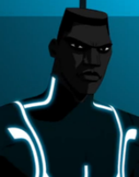

|  |
TronSecurity program tasked with maintaining justice for all programs on the Grid against the forces of evil perpetuated by Master Control Program. Tron is a security computer program written by Alan Bradley, and in 1982 was taken prisoner by the self-aware Master Control Program and |
| Disk Arena Games | 🌟🌟🌟🌟🌟🌟🌟🌟🌟 |
| Light Cycling | 🌟🌟🌟🌟🌟 |
| Speed | 🌟🌟🌟🌟🌟🌟🌟🌟 |
| Strength | 🌟🌟🌟🌟🌟🌟 |
| Durability | 🌟🌟🌟🌟🌟🌟🌟🌟🌟🌟 |